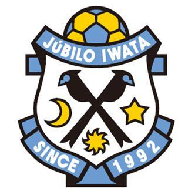

バイク
高校時代から格好いいなて思って乗り始めました。
乗っていたバイクはCB125→ZRX400→ゼファー750と乗ってました
写真は最後に乗っていたゼファーです。
バイク好きな方ツーリング行きましょ！
サッカー

小学校２年生から６年生までサッカーをしていました。地元静岡県にはジュビロ磐田があり地域としてもサッカーが盛んでした。
しかし、中学からは陸上部に入りました。陸上では県大会まで行くことができました。
体を動かすことが好きなので、沖縄の海を見ながらランニングしたいと思っています。